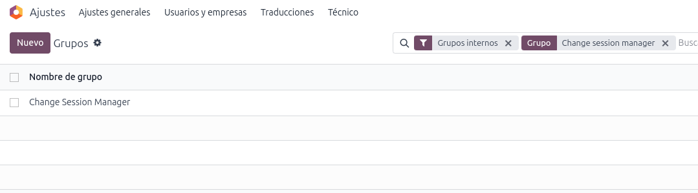
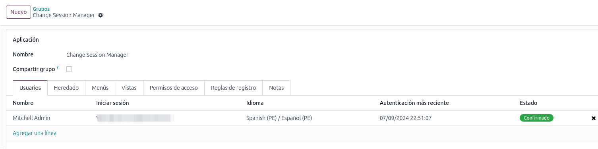
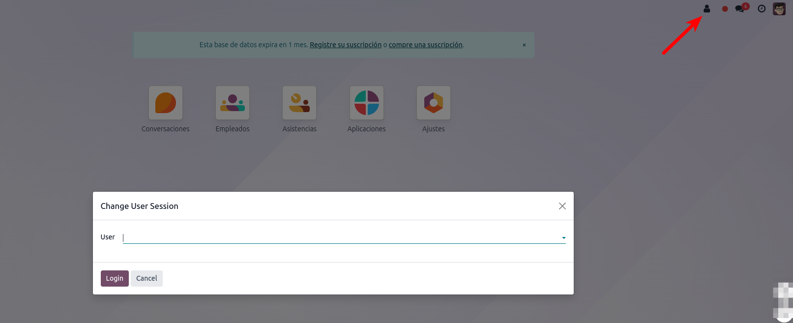

Built for administrators, support agents and consultants who need to reproduce a user's view of Odoo without leaving their own browser session.
A user icon in the systray opens a quick wizard to log in as any other user instantly.
Access is gated by the Change Session Manager security group. The icon is hidden for anyone else.
Reproduce permission issues, test record rules and validate workflows without asking users for their credentials.
Once installed, add yourself (or the right manager) to the Change Session Manager group. A new user icon appears in the top-right systray.

1. Click the user icon in the systray.

2. Pick the target user and confirm.

3. Odoo reloads — you are now signed in as that user.
This module grants effective impersonation of any user in the database. Only assign the Change Session Manager group to fully trusted administrators. All actions performed after switching are recorded against the target user, exactly as if they had logged in themselves.
| Odoo Version | 19.0 (Community & Enterprise) |
| Dependencies | base, web |
| License | LGPL-3 |
| Frontend | OWL component in web.assets_backend |
| Security Group | change_user_session.change_user_session_group_manager |
Need a feature or found a bug? Contact Hedrich — hedrich2411@gmail.com